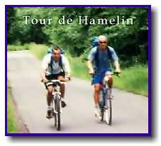
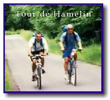
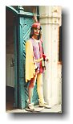
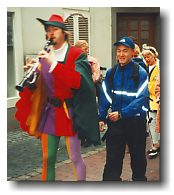
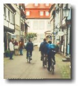
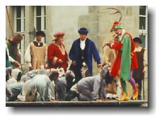
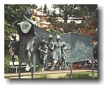
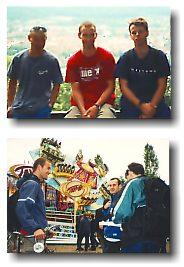
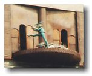

Hamelin, Germany

|
Hamelin, Germany  |
|
Trip #3: Sunday June 6, 1999 Where the heck is Hamelin? Just 45 min. south west of Hannover. And why did we choose to go there? An American in Hamburg recommended that we go there to see 16th century architecture. That was enough reason for me. So we (Ben, Ryan, Paul, myself, and our bikes) hopped on a train to Hamelin. Hamelin is where the Pied Piper tale originated. Anything that Hamelin has to offer has something to do with Pied Piper. Look left, look right, Pied Piper is there. From statues, postcards, theatres, books, museums, Pied Piper has something or everything to do with it. There’s no escaping it. Pied Piper has set foot on Hamelin and is there to stay. For those of you who don’t know the Pied Piper tale, here’s my interpretation of it. (I’d better get it right because I heard it in English, French, and Japanese. German too, but that doesn’t help much.) In 1284, the city of Hamelin was flooded with rats. In desperation, the city seeked any help. A man that played a pipe (Pied Piper) offered to remove all the rats for a fixed sum of 100 gold pieces. The mayor agreed. So the Pied Piper played his pipe and led all the rats to the Weser River, where they all drowned. Now rat free, the city celebrated, but neglected to pay the Pied Piper more than 1 piece of gold because his work was too easy. Furious, the Pied Piper returned later that year and played his pipe once again. This time, instead of attracting rats, he attracted children. He led 130 children away from the city and their parents never saw them again. Hamelin doesn’t waste any time. Upon arrival at the train station, we saw two statues of Pied Piper. |
|  | We first toured around the Altstadt (old town). Really nice. Probably the nicest Altstadt I’ve seen in Germany so far. There were a lot of narrow and wavy streets, surrounded by trendy restaurants. |
| Our first main attraction was a weekly outdoor re-enactment of the (surprise surprise) Pied Piper story. Actors were dressed up in old-fashioned clothes and kids played the part of rats. It was in German, but I understood it all. Either my German is getting better, or they told the story in other languages beforehand. There’s no fooling anyone here. It’s the latter. |
|  | We then biked to the Rathaus (city hall). In front in the courtyard was a big sculpture of children and (guess who?) Pied Piper playing his pipe. |
|
 By this time, we were getting tired of the Pied Piper, so we decided to cross the Weser river and bike up a mountain. After a 138m vertical bike climb, we were at the peak of Hamelin. If it weren’t for the cloudy weather, it would have been an awesome view. Awesome or not, we had to take a complimentary picture. On the way down, we did a bit of off-roading to remind us of what we’re missing in Vancouver. Before we got to the bottom, we turned off the main trail. After 5 min. or so, we came to a big amusement park. Out of nowhere, on the side of the mountain is where we found this park. This completely took us off guard. It wasn’t a low-key theme park either. It may have been smaller than the PNE, but the spirit was there. Still stunned, we left the amusement park. At the bottom of the mountain on a main road, we were puzzled at all the locals standing by a main street doing nothing. Lo & behold, there was a huge parade. This parade went on and on and on. Soccer players, Basketball players, Dancers, Beer Brewers, members of all types of clubs, Brazilians, Americans, Cyclists; you get the point. Everyone that’s anyone was in it. Having missed seeing the Pied Piper by this time, we went back to the Altstadt for a final glimpse. It happened at 3:35, when a tiny stage emerged from a giant clock. On this stage was a model Pied Piper with his rats. We felt we had seen enough of the Pied Piper for a single trip, so we decided to pass up on the Hamelin Museum - where the Piper is displayed in 20 poses and 20,000 books - and went back home to Hannover. It’s a good thing Pied Piper exists. If it didn’t, Hamelin would be hurting for an identity. |
 johnnyo@canada.com
johnnyo@canada.com